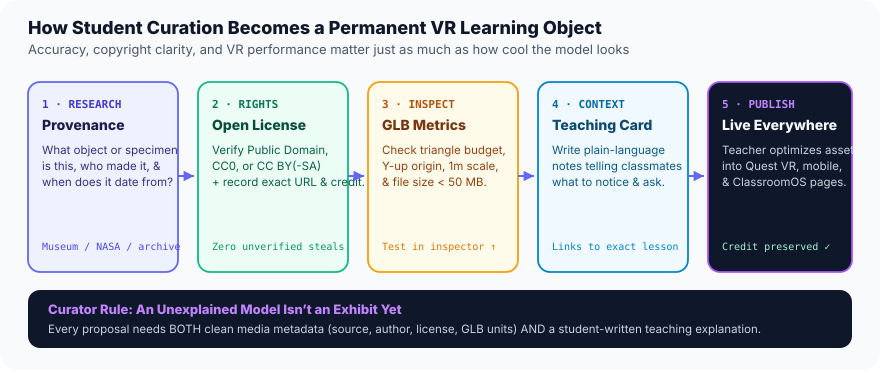
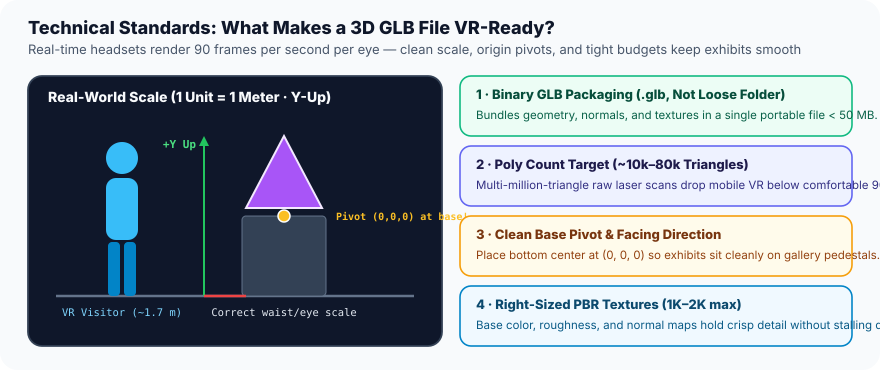
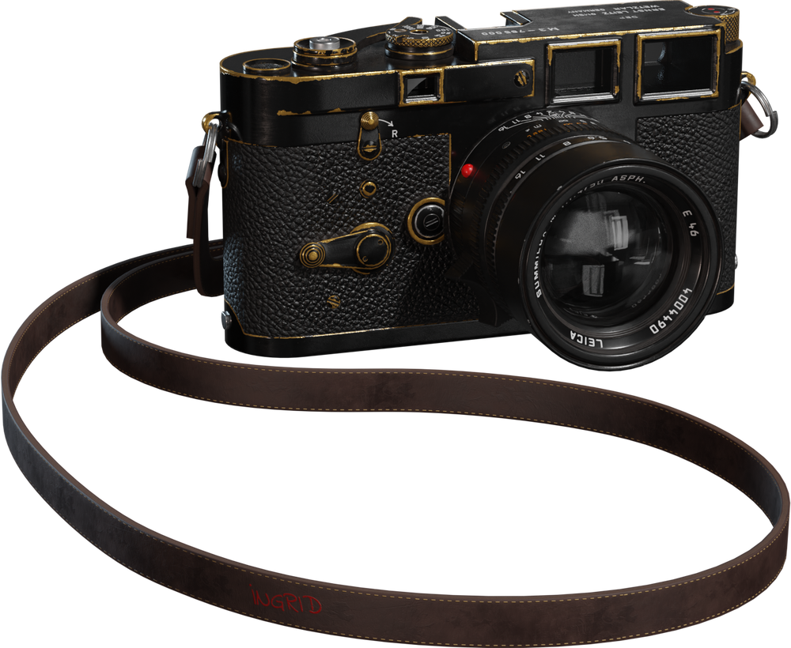

Research · Context · Immersive Website Building
VR Website Research Proposal
Help grow the classroom website into a more accurate, immersive reflection of the real world. Find images, 3D models, artifacts, experiments, and evidence that deepen what we teach, then explain the context clearly enough that another student can learn from it in VR, AR, or a desktop browser.
Interactive 3D Exhibition Prep Inspector
Inspect real ClassroomOS .glb artifacts on a 1-meter VR gallery pedestal — or preview a local .glb/.gltf file straight in your browser — before writing a museum proposal.
Your Assignment
You are not only collecting cool media. You are curating learning material for the whole ClassroomOS website. Find a real-world image, 3D model, historical artifact, time-period reference, scientific concept, experiment, simulation idea, or primary source that could make a lesson more concrete. Then study it closely, understand its background, and prepare it with enough explanation for the class to use responsibly.
The old idea was a single virtual museum. The new goal is bigger: the entire learning website can grow into something students can explore with VR headsets, phones, tablets, or computers. Your research helps decide what belongs in that world.
What You Can Find
- Historical artifacts: Ancient pottery, tools, maps, weapons, clothing, architecture, documents, or museum scans
- Time periods: Visual references that show daily life, technology, environments, beliefs, trade, conflict, or cultural change
- Scientific comprehension: Models, diagrams, microscope images, datasets, simulations, field evidence, or real-world examples of a concept
- Experiments and demonstrations: Materials, procedures, results, safety notes, and examples that could become classroom labs or interactive website activities
- 3D objects and spaces: GLB models, scans, reconstructions, landmarks, fossils, organisms, machines, tools, or environments that could be placed into a VR-ready lesson
Context Comes First
Before You Propose It
- Identify what the item, image, model, source, or experiment actually represents
- Explain where it comes from, who made it, and whether the source is trustworthy
- Connect it to a specific lesson, topic, standard, question, or real-world problem
- Describe what students should notice when they interact with it
- Include attribution, license information, and a source link whenever possible
Useful Source Types
- Museums and archives: Public collections, scans, images, and object records
- Science organizations: NASA, NOAA, universities, labs, journals, and educational repositories
- Creative Commons libraries: Images or models that clearly state how they may be reused
- Student-created work: Original photos, scans, diagrams, models, measurements, or experiment documentation
Prepare Your Contribution
This page is no longer a direct upload portal. Use it as a guide for what your proposal must include. Once your idea is approved, your teacher will collect or download the files, links, images, 3D models, and documentation needed to add the contribution to the website.
Your Proposal Should Include
- Your name and a clear title for the object, concept, period, or experiment
- The contribution type: artifact, time period, science concept, experiment, image, 3D model, dataset, or other source
- A student-written explanation of the context, accuracy, and learning value
- Source links, attribution details, and license information whenever available
- Notes about what files will need to be collected if the proposal is approved
After Approval
- Your teacher will review the proposal for accuracy, usefulness, safety, and source quality
- Approved files will be collected from you directly or downloaded from the approved source
- Images, documents, and references may be added to lessons or showcase pages
- 3D models should be VR-ready when possible, preferably GLB files under 50 MB for smooth headset performance
- Your contribution may be edited, credited, resized, compressed, or adapted before it appears on the website

.glb bundle.
ClassroomOS diagram · CC BY 4.0

.glb, applied real-world meter scale, bounded triangle count, and clear source licensing.
ClassroomOS diagram · CC BY 4.0

How This Builds the Website
Approved contributions can become part of lessons, showcases, interactive activities, and the VR experience. The goal is for the website itself to keep becoming more explorable, more accurate, and more connected to real objects, real places, real experiments, and real evidence.